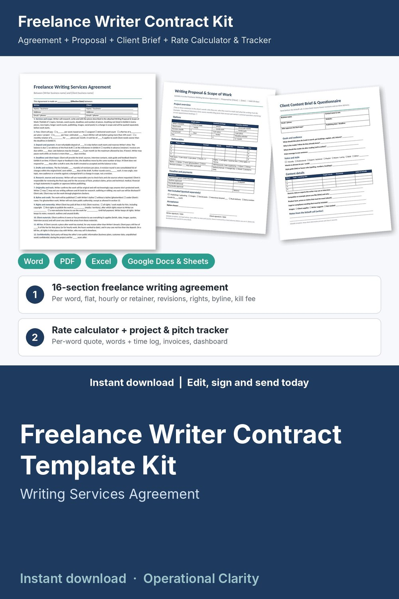

Freelance Writer Contract Template Kit

Get the deposit, the kill fee and the rights right: a complete freelance writer contract kit with a working per-word rate calculator, project tracker and pitch tracker, not just a Word file.
WHAT'S INSIDE
- Freelance Writing Services Agreement (Word + PDF): 16 plain-English sections, 2 pages. Scope (Exhibit A), per-word, flat, hourly or monthly retainer fees, rush fee, deposit and payment, late fee, deadlines and client input, drafts and revision rounds, research and accuracy, originality and AI tool use, byline or ghostwriting, rights and ownership (work for hire, first rights or license, on full payment), client materials, kill fee, confidentiality, portfolio, independent contractor, termination, limitation of liability, governing law, signatures.
- Writing Proposal & Scope of Work (Word + PDF): 3 options (single piece / content package / monthly retainer), deliverables with word counts and draft and final due dates, rate basis, rights, byline, timeline and payments. Attach it to the agreement as Exhibit A.
- Client Content Brief & Questionnaire (Word + PDF): goals, audience, call to action, voice and style, topics, target words, keywords, links, sources and facts that must be exact.
- Revision Request Form, 14-point Pre-Submission Checklist, and Content Approval & Rights Release (Word + PDF).
- Freelance Writer Rate Calculator & Project Tracker (Excel / Google Sheets, 11 tabs):
* Rate Planner: your minimum hourly rate AND minimum per-word rate from income goal, expenses, taxes, billable hours and words per hour
* Quote Builder: pieces x words x hours, per-word or flat price per line, rush fee, expenses, rounded fixed fee, effective per-word and hourly rate, deposit, kill fee, extra revision price and a monthly retainer price
* Projects: per word / per piece / hourly / retainer, words contracted vs written, draft and final due dates, rights sold, byline, revision rounds, hours vs budget, invoiced, paid, balance, earned per hour, alerts (DRAFT LATE / DRAFT DUE SOON / DUE SOON / PAST DUE / EXTRA REVISIONS / OVER BUDGET / KILLED)
* Pitch Tracker: outlet, editor, idea, date sent, next follow-up date, FOLLOW UP NOW / WAITING / ACCEPTED alerts
* Time Log with words written, and Expenses (billable Y/N, markup)
* Invoices: due dates, days overdue, late fee, PAID / OPEN / PARTIAL / OVERDUE status
* Printable Invoice: pick a project and dates, billable hours by task and expenses fill in
* Dashboard: invoiced, collected, outstanding, overdue, unbilled work, words written, words per hour, earned per hour and per word, pitch acceptance rate, month-by-month chart
- START HERE guide (PDF)
HOW IT WORKS
1. Set your rates in the Rate Planner and your deposit, kill fee and revision rules on Settings.
2. Send the Client Content Brief, then price the work in the Quote Builder.
3. Send the Proposal; when the client says yes, fill in the Agreement, sign and invoice the deposit.
4. Track drafts, words and hours on Projects; run the Pre-Submission Checklist before every draft and ask for one Revision Request per round.
5. Get the Content Approval signed, bill the balance, and keep your pitches moving on the Pitch Tracker.
Example data (6 sample assignments) shows how it all connects; delete it and type your own. Yellow cells = type here, green cells = calculated.
FORMATS
- Word .docx (edit in Microsoft Word, Google Docs, Pages or LibreOffice) + PDF, US Letter
- Excel .xlsx (works in Excel and Google Sheets)
This is an instant digital download, no physical item will be shipped.
Editable template, not legal advice. Laws differ by state and country; have it reviewed by a local attorney before you use it.